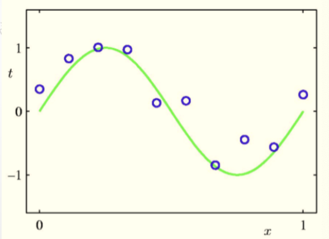
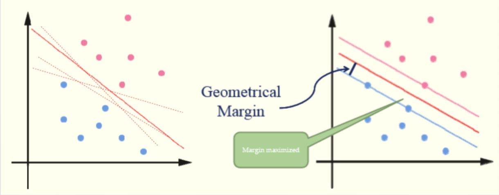
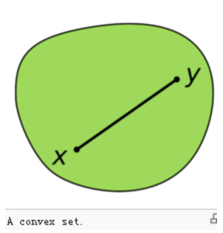
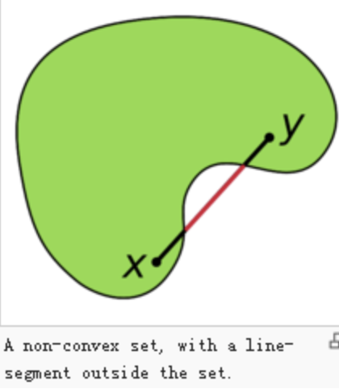

classification and clustering
本文最后更新于：September 12, 2020 am
聚类
什么是聚类
一类数据点的集合
- 类内相似性
- 类间差异性
衡量聚类好坏的标准
- 最大化类间距离
- 最小化类内距离
数值闵可夫斯基距离
L1曼哈顿距离
L2欧几里得距离
切比雪夫距离
向量-余弦相似度
余弦相似性是通过测量两个向量的夹角的余弦值来度量他们之间的相似性
K-means
已知观测集$(x{1},x{2},…,x{n})$，其中每个观测都是一个d-维实向量，k-平均聚类要把这n个观测划分到k个集合中(k≤n),使得组内平方和（WCSS within-cluster sum of squares）最小。换句话说，它的目标是找到使得下式满足的聚类$S{i}$
其中$\mu {i}$是$S{i}$中所有点的均值
总之：思想是最小化类内距离平方之和
方法
随机选取k个聚类质心点，$u_1,u_2,\cdots,u_k\in\mathbb{R}^n$
重复下面过程直到收敛
对每一个样例i,计算其应该属于的类
$c^{(i)}:=arg\,\underset{\mathbf{j}}min\Vert{x^{(i)}-u_j}\Vert^2$
对每一个类j,重新计算该类的质心
$u_j:=\frac{1}{n_j}\underset{x_j\in c^{(j)}}\sum x_j$
pseudocode
特点：
- 简单快速
- 聚类结果容易收到起始点影响
- 聚类结果在向量空间为球状[凸集]
- 聚类结果容易收到噪声[脏数据]影响
k-means是做不到第二种聚类效果的
K-medoids
Mean:聚类的中心
Medoid:聚类的中心数据点[到类内每个数据点到距离之和最小]
算法：
1、把所有数据划分为k个非空子集
2、计算每个子集的中心点[mean]
3、把离中心最近的数据点[medoid]作为该子集的实际中心点
4、把所有数据点重新划分[划分到离该数据点最近的中心点]
5、重复步骤2，直到中心点不发生变化
谱聚类
思想：把数据集看作带权无向图，将图切分成多个不相交的子图，使子图内相似度较高，子图间相似度较低
- $找到最小切分min\,cut(A,B)$
$cut(A,B)=\underset{i\in A,j\in B}\sum w_{ij}$
A与B两类之间相连边的权重
- 最大化类内连接相似度 $max(assoc(A,A)+assoc(B,B))$
$assoc(A,A)=\underset{i\in A,j\in A}\sum w_{ij}$
A类内相连边的权重
- Normalized-cut
$Ncut(A,B)=\frac{cut(A,B)}{assoc(A,V)}+\frac{cut(A,B)}{assoc(B,V)}$
要使类间相似度最小，也就是分子最小
要使类内相似度最大，也就是（分母-分子）越大
目标 $min\,Ncut(A,B)$
开始化简
$cut(A,B)=assoc(A,V)-assoc(A,A)=assoc(B,V)-assoc(B,B)$
$Ncut(A,B)=\frac{cut(A,B)}{assoc(A,V)}+\frac{cut(A,B)}{assoc(B,V)}$
$=\frac{assoc(A,V)-assoc(A,A)}{assoc(A,V)}+\frac{assoc(B,V)-assoc(B,B)}{assoc(B,V)}$
$=2-(\frac{assoc(A,A)}{assoc(A,V)}+\frac{assoc(B,B)}{assoc(B,V)})$
$=2-Nassoc(A,B)$ （Nassoc(A,B)跟Ncut很像）
为了化简，使用一些技巧
$\mathbf{x}\in {1,-1}^n$
$if\quad i\in A, x_i=1$ $else\quad if\quad i\in B,x_i=-1$ 即在A类，x=1; 在B类，x=-1
$di=\sum_j w{ij}$ 也就是与i相连边的权重之和
我们的目标函数就可以变成
cut(A,B)在A类x为+1，B类为-1，要计算权重和也就变成了 $\sum{x_i>0,x_j<0}-w\{ij}x_i x_j$
assoc(A,V)计算与A中的点相连的边的权重之和，在A中的点x=+1，他上面连的边的权重 $\sum_{x_i>0}d_i$
继续化简
先提出两个矩阵
$W\in R^{n\times n} \, formed \, by\,w_{ij}$
$D\in R^{n\times n}\, formed\, by\,d_i$
提出一个系数
$k=\frac{\sum_{x_i>0}d_i}{\sum_i d_i}$也就是与第i个点相连的边的顶点在A中的权重所占所有边权重的比例
推导
$(1-x)$在A中x为0，在B中x为2
$(1+x)$在A中x为2，在B中x为0
$\mathbf{1}$全为1的向量
先来证明
首先可知的是
$(1-x_i^2)=0$,所以 $d_i$系数都是0，我们可以不考虑
然后 $w_{ij}$的系数是 $(1-x_i)(1+x_j)$，要使系数不为0，则 $x_i=1$,$x_j=-1$,即i在A类，j在B类
这里，我们就基本上证明了
再来证明 $\sum_{x_i>0}d_i=k\mathbf{1}^TD\mathbf{1}$
$4Ncut(A,B)=\frac{(1-\mathbf{x})^T(D-W)(1+\mathbf{x})}{k\mathbf{1}^TD\mathbf{1}}+\frac{(1+\mathbf{x})^T(D-W)(1-\mathbf{x})}{(1-k)\mathbf{1}^TD\mathbf{1}}$
继续做化简
提出另一个系数 $b=\frac{k}{1-k}$这也就是在 $\frac{A中权重}{B中权重}$
$4Ncut(A,B)=\frac{(1+\mathbf{x})^T(D-W)(1+\mathbf{x})}{k\mathbf{1}^TD\mathbf{1}}+\frac{(1-\mathbf{x})^T(D-W)(1-\mathbf{x})}{(1-k)\mathbf{1}^TD\mathbf{1}}=\frac{[(1+x)-b(1-x)]^T(D-W)[(1+x)-b(1-x)]}{b\mathbf{1}^TD\mathbf{1}}$
令 $y=(1+x)-b(1-x)$
$\sum_{x_i>0}d_i=b\sum_{x_i<0}d_i$ $(\frac{A中权重}{B中权重}\cdot B中权重=A中权重)$
$\Rightarrow$
综上
$\underset{x}{min}Ncut(x)=\underset{y}{min}\frac{y^T(D-W)y}{y^TDy}$
$s.t.\,y\in{2,-2b}^n,y^TD1=0$
我们放宽对y的限制
$\underset{y}{min}\frac{y^T(D-W)y}{y^TDy}，y\in R^n,y^TD1=0$
接下来讨论如何求解y
瑞丽商
$Rayleigh\,Quotient$
$\underset{x}{max}\frac{x^TAx}{x^TBx}\Rightarrow \underset{x}{max}x^TAx \quad s.t.x^TBx=1$
$L(x)=x^TAx+\lambda (x^TBx-1)$
推论
$f(x)=x^TAx$,则 $\frac{\partial f(x)}{\partial x}=(A+A^T)x$
这样就可以推得
$\frac{\partial L(x)}{\partial x}=0\Rightarrow (A+A^T)x+\lambda(B+B^T)x=0$
如果A和B是对称矩阵
$Ax=kBx,k=-\lambda$
回到原题的计算
即求 $(D-W)y=\lambda Dy$
$D^{-1}(D-W)y=\lambda y$
即求 $D^{-1}(D-W)的特征向量(舍弃最小的特征值)$
插一个矩阵的求导
对于一个函数 $f: \mathbb{R}^{m\times n}\mapsto\mathbb{R}$ 从一个$m\times n$的矩阵映射到实数，我们定义f对于A的导数为
举个例子
函数 $f:\mathbb{R}^{2\times 2}\mapsto \mathbb{R}$为
可以得到
整体聚类的步骤：
- 假设 $y_1,y_2,\cdots,y_k\in R^{n\times k}$是最小的k个特征向量
- 令 $Y=[y_1,y_2,\cdots,y_k] \in R^{n\times k}$
- 矩阵Y的行可以看作原始数据的k维表示
- 利用k-means算法
为什么可以用y来做特征进行k-means聚类呢
首先要问，求出来的y是什么？
$\mathbf{y_i}$是Ncut(A,B)取最小值时对应的一组特征向量，y与x之间存在关系，$\mathbf{y}=(1+\mathbf{x})-b(1-\mathbf{x})$,x代表的是每个点的类别，那么我们可以认为，每个y对应着Ncut(A,B)最小时的一种分类方式
我们得到了一个 $n\times k$的矩阵Y
我们相当于对 $p_1=\left[\begin{matrix}y_1^1&y_2^1&\cdots&y_k^1\end{matrix}\right]$
$p_2=\left[\begin{matrix}y_1^2&y_2^2&\cdots&y_k^2\end{matrix}\right]$
$p_n=\left[\begin{matrix}y_1^n&y_2^n&\cdots&y_k^n\end{matrix}\right]$
这n个元素做聚类
$p_i$的意义是在对应着第i个元素最佳的k种分类方式
对 $p_i$做聚类，也就是找到最相似的 $p_i$们聚到一起，也就是在k种分类方式中，把经常分到一组的聚到一起
分类问题
什么是分类问题
从有标签的数据集（训练集）中提取规律，并应用规律对无标签数据集（测试集）进行分类
衡量分类好坏的标准
混淆矩阵
精确度
$prercision=\frac{TP}{TP+FP}$
召回率
$recall=\frac{TP}{TP+FN}$
$F_1$score
$F_1=\frac{2}{\frac{1}{precision}+\frac{1}{rercall}}$
线性回归
曲线拟合
泰勒展开
$\mathbf{x}=[1,x,x^2,\cdots,x^M]^T$
$\mathbf{\theta}=[\theta_0,\theta_1,\theta_2,\cdots,\theta_n]^T$
$h(x,\mathbf{\theta})=\mathbf{\theta}^T\mathbf{x}$
分类问题中的线性回归
$x\in A, h(x,\theta)=0$
$x\in B,h(x,\theta)=1$

均方误差
目标函数
目标是求取最小值时的$\theta$向量
迹
接下来介绍“迹”，“tr”。对于一个$n\times n$的矩阵 A, A的迹是他对角线上的元素之和
迹的一些性质
假设$A是m\times n$矩阵，B是$n\times m$矩阵
得到
易证
- $trA=trA^T$
- $tr(A+B)=trA+trB$
- $traA=atrA$
下面是迹微分的一些性质:$\vert A\vert$表示行列式
- $\nabla_AtrAB=B^T$
- $\nabla_{A^T}f(A)=(\nabla_A f(A))^T$
- $\nabla_AtrABA^TC=CAB+C^TAB^T$
- $\nabla_A\vert{A}\vert=\vert{A}\vert(A^{-1})^T$ 非奇异矩阵
- 证明1
- 证明2
- 证明3
- 证明4
令$C_{ij}$为代数余子式
由此可得
解释第一条
假设我们有一个矩阵$B\in\mathbb{R}^{n\times m}$
我们可以定义一个函数$f:\mathbb{R}^{m\times n}\mapsto\mathbb{R}$
$f(A)=trAB$
这样的定义是有意义的，因为如果$A\in \mathbb{R}^{m\times n}$,那么$AB$就是一个方阵，可以求迹，因此$f$确实从$\mathbb{R}^{m\times n}$映射到$\mathbb{R}$
接下来，我们着手找到使$J(\theta)$取到最小值的$\theta$.可以从把$J$写成向量矩阵的形式开始
对于一个训练集，定义一个设计矩阵X
同样，$\overrightarrow{y}$是包含了训练集目标值的m维向量
我们有$h_\theta(x^{(i)})=(x^{(i)})^T\theta$，可以得到
对于一个向量$\overrightarrow{z}$,有$\overrightarrow{z}^{T}\overrightarrow{z} = \sum_{i}z_{i}^{2}$
为了得到$J(\theta)$的最小值，对$\theta$微分
用上面的性质2，3
$\nabla_{A^T}f(A)=\nabla_A f(A)^T$
$\nabla_AtrABA^TC=CAB+C^TAB^T$
可以得到
- $\nabla_{A^T}trABA^TC=\nabla_A(trABA^TC)^T=B^TA^TC^T+BA^TC$
计算得出
为了得到$J(\theta)$的最小值，使$\nabla_{\theta}J(\theta)=0$, 可以得到正规方程
SVM

容易看到，这两种分类方法，第二种是更优的，我们可以认为在不同的分界线中，离数据点远点线是更优的
令我们需要拟合的直线为 $w^Tx+b$
函数间隔和几何间隔
给定一个训练样本 $(x^{(i)},y^{(i)})$,其中x是特征,y是结果 标签
定义函数间隔如下:
$\hat{\gamma}^{(i)} = y^{(i)}(w^Tx^{(i)} + b)$
当$y^{(i)}=1$时,$\hat{\gamma}^{(i)}$应该hi是个大整数，$y^{(i)}=-1时$ 是个大负数
函数间隔越大，我们对分类结果越确信
定义全局样本上的函数间隔为
$\hat{\gamma}=\underset{i=1,\cdots,m}{min}\hat{\gamma}^{(i)}$
定义几何间隔如下
B在 $w^Tx+b=0$上，A到分割面的距离用 $\gamma^{(i)}$表示，B是A在分割面上的投影
向量 $\overrightarrow{BA}$的方向就是w的方向
这个地方产生了问题是因为没有想清楚 $y=w^Tx+b$如上图所示，两个坐标轴应该是 $x_1, x_2$,$y$是标圈和叉的那个维度，图为二维实则三维，所以是个分割面
A的坐标是 $(x^{(i)}, y^{(i)})$，所以B的坐标应该是 $x=x^{(i)}-\gamma^{(i)}\frac{w}{\Vert{w}\Vert}$（这里做的是向量减法)
带入 $w^Tx+b=0$
$w^T(x^{(i)}-\gamma^{(i)}\frac{w}{\Vert{w}\Vert}) + b=0$
解得$\gamma^{(i)}=\frac{w^Tx_i+b}{\Vert{w}\Vert}=(\frac{w}{\Vert{w}\Vert})^Tx^{(i)}+\frac{b}{\Vert{w}\Vert}$
通常，我们会将几何间隔定义为
$\gamma^{(i)}=y^{(i)}(\frac{w}{\Vert{w}\Vert})^Tx^{(i)}+\frac{b}{\Vert{w}\Vert}$
我们可以看到 当$\Vert{w}\Vert=1$时，$\gamma^{(i)}=y^{(i)}(w^Tx^{(i)}+b)=\hat{y}$，即几何间隔等于函数间隔
定义全局的几何间隔 $\gamma=\underset{i=1,\cdots,m}{min}\gamma^{(i)}$
最优间隔分类器
我们要做的就是寻找一个分割面，使得离分割面最近的点和分割面的距离最大，距离越大我们就对一个样本分到正确的类越有信心
我们要使$\gamma=\underset{i=1,\cdots,m}{min}\gamma^{(i)}$取到最大值，即
$max_{\gamma,w,b}\gamma\quad s.t.\,\, y^{(i)}(\frac{w}{\Vert{w}\Vert})^Tx^{(i)}+\frac{b}{\Vert{w}\Vert}\geq\gamma\,\,\,\, i=1,\cdots,m\quad \Vert{w}\Vert=1$
这里将 $\Vert{w}\Vert$规约为1，因为几何间隔中 $\Vert{w}\Vert$ 变成2，那么所有几何间隔缩小为原来的一半，对大小的比较不产生影响
但是 $\Vert{w}\Vert$不是一个凸集，无法带入优化软件计算，我们考虑几何间隔与函数间隔 $\hat{y}$之间d 关系后得到
$max_{\gamma,w,b}\frac{\hat{\gamma}}{\Vert{w}\Vert} \quad s.t.\,\, y^{(i)}(w^Tx^{(i)}+b)\geq\hat{\gamma}\,\,\,\, i=1,\cdots,m$
这里的 w就不受$\Vert{w}\Vert=1$的限制了
但是目标函数依然不是凸函数，我们对 $\hat{\gamma}$做限制，取 $\hat{\gamma}=1$，那么离分割面最近的距离为 $\frac{1}{\Vert{w}\Vert}$，求 $\frac{1}{\Vert{w}\Vert}$的最大值相当于求 $\frac{1}{2}\Vert{w}\Vert^2$的最小值，最后得到
$min_{\gamma,w,b}\frac{1}{2}\Vert{w}\Vert^2\quad s.t.\,\,\,\, y^{(i)}(w^Tx^{(i)}+b)\geq 1\quad i=1,\cdots,m$
这是个二次规划问题，可以带入软件求解
补充凸优化
为什么要凸优化？
这种优化是一定可以找到全局最优的，因为不存在局部最优，只有一个最优点
所以对于梯度下降或其他的最优化算法而言，在非凸的情况下，很可能找到的只是个局部最优
什么是凸集？
集合中任意两点的连线都在集合中
|  |  |
凸优化问题的定义
在凸集上寻找凸函数的全局最值的过程称为凸优化
即，目标函数(objective function)是凸函数，可行集(feasible set)为凸集
为何目标函数需要是凸函数？
这个比较容易理解，不是凸函数会有多个局部最优，如下图，不一定可以找到全局最优
为何可行集需要为凸集？
稍微难理解一些，看下图
虽然目标函数为凸函数，但是如果可行集非凸集，一样无法找到全局最优
References:
[1] 吴恩达机器学习
本博客所有文章除特别声明外，均采用 CC BY-SA 4.0 协议 ，转载请注明出处！